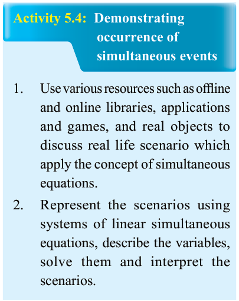
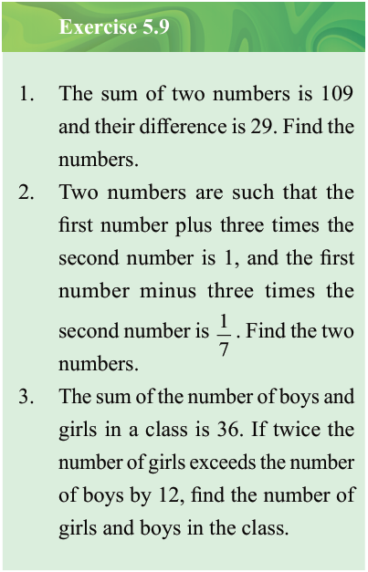

Activity 5.4: Demonstrating occurrence of simultaneous events
Use various resources such as offline and online libraries, applications and games, and real objects to discuss real life scenario which apply the concept of simultaneous equations.
Represent the scenarios using systems of linear simultaneous equations, describe the variables, solve them and interpret the scenarios.

Exercise 5.9
The sum of two numbers is 109 and their difference is 29. Find the numbers.
Two numbers are such that the first number plus three times the second number is 1, and the first number minus three times the second number is . Find the two numbers.
The sum of the number of boys and girls in a class is 36. If twice the number of girls exceeds the number of boys by 12, find the number of girls and boys in the class.
4.
Twice the length of a rectangle exceeds three times its width by one centimetre. If one third of the difference of the length and the width is one centimetre, find the dimensions of the rectangle.
The cost of 4 pencils and 5 pens together is 6,000 Tanzanian shillings, while the cost of 6 pencils and 8 pens together is 9,400 Tanzanian shillings. Calculate the cost of one pencil and one pen.
Half of Paul’s money plus one fifth of Hamisa’s money is 14,000 Tanzanian shillings. Three quarters of Paul’s money plus two-thirds of Hamisa’s money is 26,500 Tanzanian shillings. How much does each one has?
One-third of the sum of two numbers is 50 and one fifth of their difference is 2. Find the numbers.
One pair of the opposite sides of a parallelogram is units and units while the other pair is units and units. Find the values of x and y.
The sides of an equilateral triangle are given as centimetres, centimetres, and centimetres. Find the values of x and y.